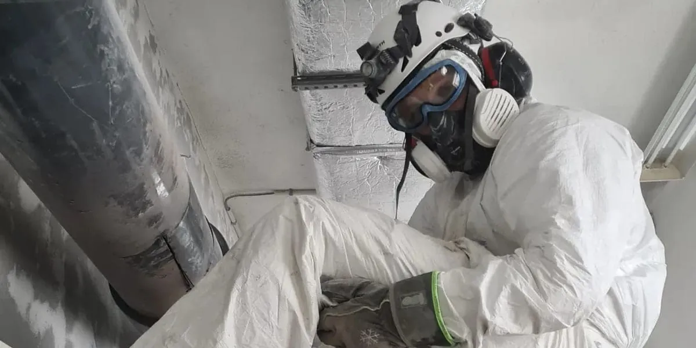

Riving
Riving av bygg og konstruksjoner — med plan for støvdemping, sortering og bortkjøring av avfall.
TotalentrepriseForside / Tjenester
Vi er totalleverandør: kartlegging, sanering og riving samlet hos én entreprenør, med fastpris som dekker hele leveransen.
Riving av bygg og konstruksjoner — med plan for støvdemping, sortering og bortkjøring av avfall.
TotalentrepriseKartlegging av miljøgifter i bygg før arbeidet starter. Rapporten er grunnlaget for riktig håndtering og pris.
Før rivingKartlegging, sikring og sanering av asbest i tråd med regelverket, med dokumentasjon på alt som fjernes.
Sertifisert arbeidPresise hull og kutt i betong — for dører, kanaler, rør og nye åpninger i eksisterende bygg.
Presisjon
Farlig avfall fjernes før rivingen begynner, og sonene sikres mens arbeidet pågår. Det er dette som gjør at prosjektet kan gjennomføres til avtalt tid — uten overraskelser.
Svarene under er generelle — det konkrete prosjektet avklares på befaring.
Vi kommer gjerne på en uforpliktet befaring, eller kalkulerer utfra mottatt tilbudsgrunnlag.
Ja. Vi kan alltid gi fastpris som inkluderer komplett leveranse.
Vi er totalleverandør og tar kartlegging, asbest, riving og betongsaging i samme leveranse.
Send tilbudsgrunnlaget, eller be om befaring.